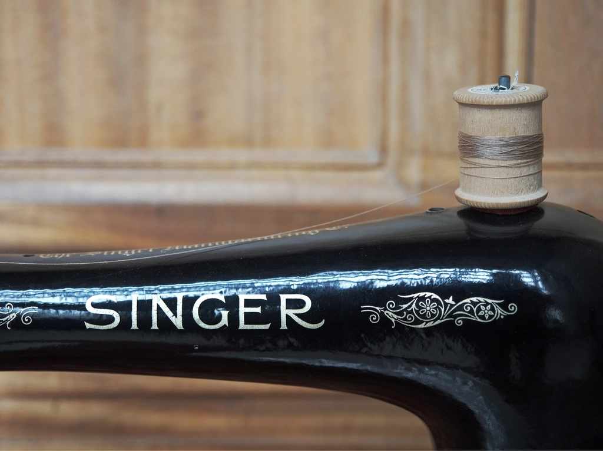
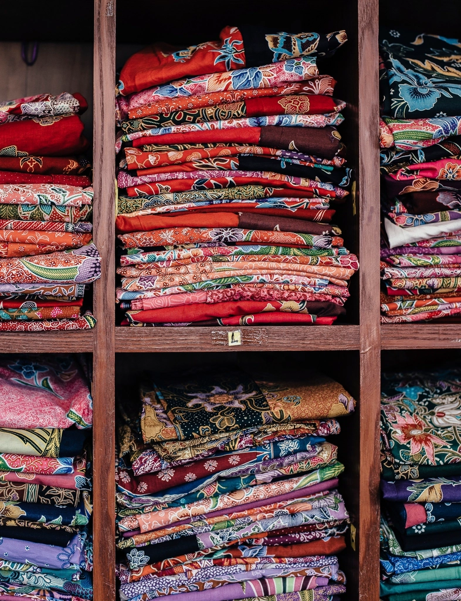
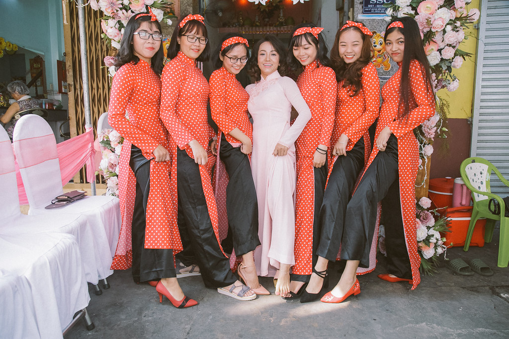
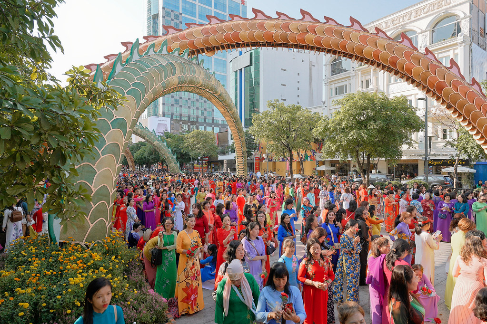

Dịch vụ may đo
Một tà áo, đúng một người
Xưởng không may sẵn. Mỗi tà áo bắt đầu từ một buổi hẹn, một sổ số đo riêng và tấm lụa bạn tự tay chọn.

Ba cách chúng tôi nhận may
Cùng một quy trình đo và thử, khác nhau ở số người mặc, thời gian và cách chọn vải.

No. 01
Áo dài riêng
Một tà áo cho riêng bạn: đi làm, đi lễ chùa, chụp ảnh hay đơn giản là để mặc vào những ngày muốn chậm lại. Bạn có thể chọn một mẫu trong bộ sưu tập hoặc cùng thợ vẽ một mẫu mới.
- Thời gian
- Khoảng 2 tuần, áo vẽ tay 3 đến 5 tuần
- Số lần thử
- 3 lần, lần cuối chỉnh tà và cổ
- Kèm theo
- Quần lụa cùng tông, sổ số đo giữ cho lần may sau

No. 02
Cưới hỏi
Áo cho cô dâu, mẹ hai bên và hội chị em bưng quả, phối màu thành một bộ thống nhất. Xưởng đo từng người, kể cả khi người mặc ở xa, để cả đội đứng cạnh nhau vẫn vừa vặn.
- Nên hẹn trước
- 6 đến 8 tuần trước ngày cưới
- Số người
- Từ 1 cô dâu đến cả đội bê tráp
- Gợi ý mẫu
- Bộ sưu tập Hỷ Sự

No. 03
Lễ, Tết và đoàn
Áo dài gia đình cho ngày Tết, áo cho đội đồng diễn, ban lễ tân hay một lớp học kỷ niệm. Cùng một dáng áo, mỗi người một bộ số đo, có thể đổi màu theo vai trò.
- Nên hẹn trước
- Trước Tết ít nhất 6 tuần
- Đo cho đoàn
- Thợ đến đo tận nơi trong TP. Huế
- Báo giá
- Sau buổi chọn vải, theo số người và chất liệu
Bốn chất liệu trong xưởng
Tất cả dệt ở Việt Nam. Thợ sẽ gợi ý chất vải theo dịp mặc và khí hậu nơi bạn sống.
| No. | Chất liệu | Mặt vải | Hợp mùa | Hợp dịp |
|---|---|---|---|---|
| 01 | Lụa tơ tằm | Mờ, mềm, rủ theo bước đi | Hè, thu | Thường ngày, đi lễ, vẽ tay |
| 02 | Lãnh | Bóng nhẹ, đứng dáng | Quanh năm | Áo trơn, áo cho mẹ và bà |
| 03 | Gấm | Dày, hoa văn dệt nổi | Đông, Tết | Cưới hỏi, áo ngũ thân |
| 04 | The | Mỏng, thưa, hơi trong | Hè | Áo khoác ngoài, áo lễ |
Sáu mươi phút ở xưởng
Buổi hẹn đầu tiên diễn ra như thế này. Bạn không cần chuẩn bị gì, chỉ cần mặc đồ gọn.
-
0′
Một chén trà
Bạn kể về dịp sẽ mặc, người mặc cùng, màu mình thích và không thích.
-
15′
Chạm vào lụa
Thợ trải từng khổ lụa, lãnh, gấm dưới ánh sáng tự nhiên để bạn xem màu thật.
-
30′
Đo dáng
Hai mươi sáu số đo ghi tay vào sổ riêng, kèm ghi chú về dáng đứng và thói quen mặc.
-
50′
Hẹn lịch thử
Chốt mẫu, chốt vải và hẹn ngày thử lần đầu, thường sau khoảng một tuần.
Giữ tà áo lụa bền lâu
Những điều trong cuốn sổ nhỏ gửi kèm mỗi tà áo.
Đặt một buổi đo, rồi tính tiếp.
Buổi đo đầu tiên không ràng buộc. Bạn chỉ quyết định may khi đã chọn được tấm lụa ưng ý.
Hẹn may đo